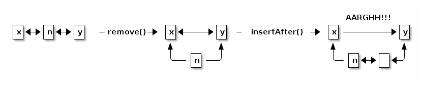

notes19
Lecture 19. Encapsulated Lists
Today's reading: Sierra & Bates, p. 664.
ENCAPSULATED LISTS (a case study in encapsulation)
Homeworks 3, 4, and 5 introduced you to three different implementations of linked lists, each fundamentally different.
With the Homework 3 lists, if an application writer wants to query the identity of every item in the list without modifying the list, it takes time proportional to the square of n, the number of items in the list (i.e., Theta(n2) time), because you have to use nth(i) to identify each item in time proportional to i.
The lists in Homeworks 4 and 5 allow an application to directly hold a node in a list. By alternating between the next() method and the item field or method, you can query all the list's items in Theta(n) time. Similarly, if an application holds a node in the middle of a list, it can insert or delete c items there in time proportional to c, no matter how long the list is.
The Homework 5 lists (SList and DList) are well-encapsulated, whereas the Homework 4 DList has flaws. I will discuss these flaws today to illustrate why designing the really good list ADTs of Homework 5 was tricky. Let's ask some questions about how lists should behave.
- What happens if we invoke l.remove(n)–but the node n is in a different
list than l?
In Homework 4, Part II asks whether it is possible for an application to break the DList invariants. One way to do this is to mismatch nodes and lists in method calls. When an application does this, the "size" field of the wrong list is updated, thereby breaking the invariant that a list's size field should be correct. How can we fix this?
ADT interface answer: The methods remove(), insertAfter(), etc. should always update the right list's "size" field.
Implementation answer: It's unacceptably slow to walk through a whole list just to see if the node n is really in the list l. Instead, every node should keep a reference to the list that contains it. In Homework 5, each ListNode has a "myList" field.
- Should insertAfter(), remove(), etc. be methods of List or ListNode?
Normally, we expect the methods that modify a data structure (like a List) to be methods within that data structure's class. However, if we define methods like insertAfter() and remove() in the ListNode class, rather than the List class, we completely avoid the question of what happens if they're invoked for a node that's not in "this" list. This way, the interface is more elegant.
ADT interface answer: the list methods are divided among List and ListNode.
Some methods of List | Some methods of ListNode | public boolean isEmpty() | public Object item() public void insertFront(Object item) | public ListNode next() public ListNode front() | public void insertAfter(Object item)
Implementation answer: again, each node has a "myList" field so we can update a list's "size" field when we call n.remove(), n.insertAfter(), etc.
- What happens if we invoke l.remove(n), then l.insertAfter(i, n)?
Another way to trash the DList invariants is to treat a node that's been removed from a list as if it's still active. If we call insertAfter on a node we've already removed, we may mangle the pointers.

The result violates the invariant that if x.next == y, then y.prev == x. We would prevent the pointer mangling if remove(n) set n's pointers to null, but that wouldn't stop insertAfter() from incrementing the list's "size" field (or throwing a NullPointerException), which is not a reasonable result.
Calling remove(n) twice on the same node also corrupts "size".
How can we fix this?
ADT interface answer: After n.remove() is executed, removing n from the list, n is considered to be an "invalid" node. Any attempt to use n, except to call n.isValidNode(), throws an exception.
Why do we change the node, rather than erasing the reference to it? First, the remove() method can't erase the reference, which is passed by value. Second, there might be lots of other references to the same node, and we need to erase all of them too! All those other references could be used to corrupt the data structure if the node itself isn't neutralized.
Implementation answer: When an item is removed from a list, the corresponding ListNode's "myList" reference is set to null. This is just a convenient way to mark a node as "invalid". The "next" and "prev" references are also set to null. These steps eliminate opportunities for accidentally corrupting a list as illustrated above. (Also, they help Java's garbage collection to reclaim unused DListNodes. We'll discuss garbage collection near the end of the semester.)
Any ListNode whose "myList" reference is null is considered "invalid", and any attempt to use it will incite an exception.
- What happens if we walk off the end of a list? (Using the next() method.)
ADT interface answer: In Homework 4, if you invoke next() on the last node in a list, it returns null. In Homework 5, it returns an invalid node instead. There are two reasons for this change. First, it provides consistency, because invoking next() at the end of a list yields the same result as removing a node. Second, if you call a method on the result-- for instance, n.next().item()–it throws an InvalidNodeException instead of a NullPointerException. This eliminates ambiguity; you can catch an InvalidNodeException without wondering why it was thrown, whereas many different bugs can cause NullPointerExceptions.
Implementation answer: Recall that our implementation uses a doubly-, circularly-linked list with a sentinel node. Any sentinel is considered an invalid node. This simplifies the implementations of the next() and prev() methods in the DList class.
However, if you apply next() to a sentinel, you won't get the first node of the list; you'll get an InvalidNodeException. Why? When n is the last node in a list, why not let n.next().next() be the first node? First, the fact that the implementation uses a sentinel should be completely hidden from the application. Second, we want to be able to change the implementation without breaking the application. Suppose we switch from DLists to SLists that don't have sentinels. We would need to "fix" SList so that n.next().next() still behaves the way it does with DLists. It's better not to allow applications to take advantage of such quirks from the start.
- How do we access an item?
ADT interface answer: In Homework 4, each node's "item" field is public. In Homework 5, we make the "item" field protected; applications must use the item() and setItem() methods to access it. Why? To make sure that applications can't store items in deleted nodes or sentinels. Any attempt to invoke item() or setItem() on an invalid node causes an exception. Why? So that the implementation can be changed without breaking an application. Suppose, for instance, that an application stores items in sentinel nodes. Would the application still work the same way if you switched from DLists to SLists, which don't have sentinel nodes?
This may seem like a strange justification. But in real-world programming, programmers often take advantage of undocumented quirks, like being able to store items in sentinel nodes. Once applications have been written that depend on these quirks, the quirks become "features" that must be preserved in any new List implementation. That's why ADTs should never do more than what the documentation says they do.
In Frederick P. Brooks, Jr.'s famous book on software engineering, "The Mythical Man-Month" (page 65), he writes
Invalid syntax always produces some result; in a policed system that result is an invalidity indication and nothing more. In an unpoliced system all kinds of side effects may appear, and these may have been used by programmers. When we undertook to emulate the IBM 1401 [processor] on System/360 [an operating system], for example, it developed that there were 30 different "curios"–side effects of supposedly invalid operations–that had come into widespread use and had to be considered as part of the definition. The implementation as a definition [of the functionality] overprescribed; it not only said what the machine must do, it also said a great deal about how it had to do it.
By ensuring that an implementation does not produce any result not specified in the interface–even for invalid inputs–a programmer makes it easy to fix bugs, optimize performance, and add new features without compromising existing applications.
This lecture's lesson is that design decisions can be complicated and have unexpected repercussions.
Our design decisions for the Homework 5 lists, described above, will carry over to our tree interfaces, which you'll encounter in an upcoming assignment.
One final thought. Why don't we simply keep a boolean "valid" flag in each ListNode, and use that to distinguish valid nodes from invalid ones? It would make the implementation clearer, and therefore more maintainable. However, it would also make each ListNode occupy more memory. I chose reduced memory use over readability, but this was an arbitrary choice.